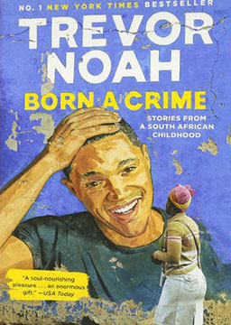
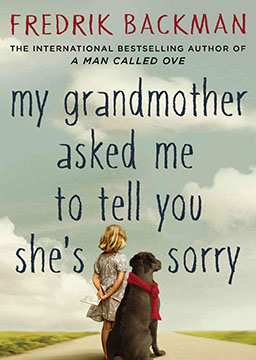

双语小说
收录中英文双语小说300多部，包括世界经典名著、社会小说、悬疑小说等短篇和长篇小说，可按照初中难度、高中难度和大学难度分类阅读，每部小说都有分段中英文对照，点击单词可查看中文翻译。

天生有罪: 特雷弗·诺亚的变色人生 (Born a Crime)
作者：特雷弗·诺亚 (Trevor Noah) [南非]
美国当红脱口秀《崔娃每日秀》主持人特雷弗·诺亚一出生就犯了罪：因为他的父亲是白人，母亲是黑人，而在当时种族隔离的南非，这样的结合属于犯罪，他父母会面临五年有期徒刑的惩罚，诺亚自己也会被送到孤儿院。为了保护诺亚，他那位勇敢、反叛、幽默、坚强、虔诚信教的母亲，想出了各种极端甚至荒唐的办法，在歧视、贫困、暴力的怪圈中，竭力为他创造了一种正常的生活。
外婆的道歉信 (My Grandmother Asked Me to Tell You She's Sorry)
作者：弗雷德里克·巴克曼 (Fredrik Backman) [瑞典]
自上市以来连续霸占《纽约时报》畅销榜50周至2018年，仅10个月内全球销量已突破150万册。2016年掀起全球阅读狂潮的温情小说，畅销40国，遍布欧美几乎每家书店。内容简介：七岁的爱莎有个古怪又疯狂的外婆，会埋伏在雪堆里吓唬邻居，把重要的事情记在墙上因为墙不会丢，半夜从医院溜出来带着爱莎翻进动物园，在阳台上用彩弹枪射击推销员，基本上想干什么就干什么。这个四处惹麻烦的外婆却是爱莎唯一的朋友，也是她心中的超级英雄。不管什么情况下，外婆都会站在爱莎这一边，为了她去跟全世界拼命。就算是超级英雄，也有失去超能力的一天。外婆不幸得了癌症去世，留给爱莎一项艰巨的任务，将外婆的道歉信送给她得罪过的九个邻居。收信人包括一只爱吃糖果的大狗，一个总在不停洗手的怪物，一个管东管西的烦人精和一个酗酒的心理医生。这一趟送信之旅让爱莎渐渐发现：外婆和邻居们的故事，比她听过的所有童话都更加精彩。这是一个关于爱、原谅和守护的故事，在合上书之后很久都难以忘记。
考研英语词汇故事 (English vocabulary for postgraduate entrance examination)
作者：未知 (unknow) [中国]
词汇是语言学习的基石。从传统上来讲，学生记单词的方法不仅单调乏味，而且效率极低，很多单词背的时候费了九牛二虎之力，用的时候还是一头雾水。有鉴于此，我们想提供给大家一种新的学习词汇的方法——用一些风趣幽默的小故事把一些看似毫无关系的词串连起来。这样记单词不仅简单方便，而且妙趣横生。
莫格街谋杀案（简化版） (The Murders in the Rue Morgue)
作者：埃德加·爱伦·坡 (Edgar Allan Poe) [美国]
法国巴黎的奥古斯特·杜邦先生，他并非警官，也不是一个真正的侦探。他是一个性格温和酷爱书籍和阅读的年轻人。但是他聪明至极，理解能力高人一等。他对莫尔格街发生的可怕的凶杀案产生了浓厚的兴趣，因为它是一个未解之谜。是谁杀害了老太太和她的女儿？这场凶杀案为何如此粗暴凶残？凶手又是如何逃出房子的？有众多谜团，却没有谜底。“诀窍，”奥古斯特·杜邦说，“在于问恰当的问题。然后就可以找到谜底……”
达洛维夫人 (Mrs. Dalloway)
作者：艾德琳·弗吉尼亚·伍尔芙 (Adeline Virginia Woolf) [英国]
一个晴朗的夏日早晨，主人公克拉丽莎·达洛维走在伦敦的街道，为自己晚上的派对采买物品。美好的天气使她想起了自己已逝的青春，以及她年轻时的狂热追随者彼得.沃尔士。她思忖自己当初嫁了可靠的达洛维，而不是捉摸不定的沃尔士，是不是一个正确的决定。沃尔士当天从印度返回伦敦来看望她，更让她突然思绪不宁。同时，在伦敦的另一角是一战退伍军人塞普蒂默斯.史密斯和他的妻子露西娅。史密斯患有无名的狂想症，经常幻见在一战中牺牲的好友伊凡。当权威医师决定对他实行强制隔离治疗时，他跳楼自尽。达洛维夫人当晚的派对很成功，名流济济。一些难得一见的旧友，那些和她一起经历了成长及年轻的旧友，也到场了，可她却抽不出身来和他们细聊。隔了那么些年，大半辈子，也想不出该说什么好。她在派对上闻知史密斯的自杀事件，心里暗自佩服这种解脱：只有这样才能真正守住自己内心纯粹的快乐吧。
爱默生论文集 (Emerson's Essays)
作者：拉尔夫·沃尔多·爱默生 (Ralph Waldo Emerson) [美国]
美国思想家、文学家，诗人。爱默生是确立美国文化精神的代表人物。美国前总统林肯称他为“美国的孔子”、“美国文明之父”。爱默生出身牧师家庭，他的父亲威廉·爱默生是一位知名的一位论派牧师。爱默生在即将过8岁的生日两周前父亲过世（1811年），由母亲和姑母抚养他成人。隔年他被送到了波士顿拉丁学校就读。1817年10月，爱默生14岁时，他入读哈佛大学并且被任命为新生代表，这个身份让他获得免费住宿的机会。为了增添微薄的薪水，寒假期间他会到Ripley 伯父在马萨诸塞州瓦胜市的学校进行辅导及教学事务。在校期间，他阅读了大量英国浪漫主义作家的作品，丰富了思想，开阔了视野。1821年爱默生从哈佛大学毕业后，他协助自己的兄弟在母亲的家中设立一所给年轻女性就读的学校，这是在他于切尔姆斯福德设立自己的学校以后的事；当爱默生的兄弟前往格丁根读神学时，爱默生负责主持这所学校。之后数年，爱默生都过着担任校长的日子，然后进了哈佛大学神学院，并于1829年以一位论派牧师的形象崭露头角。
清单人生 (Britt-Marie Was Here)
作者：弗雷德里克·巴克曼 (Fredrik Backman) [瑞典]
人生有一种艰难，是舍弃无比熟悉的生活，重新开始。布里特-玛丽是那种你能想象到的最无趣的63岁女人，因为她不允许生活里有任何波澜。每天6点准时起床，12点必须用餐，从不在天黑后出门，床单整理得一尘不染，否则就不是“文明人的做法”。她有许多许多清单，甚至有一张记录所有清单的清单，以保证她和丈夫的太平日子万无一失。然而人生怎么可能用一纸清单来规划呢？丈夫出轨，她对美好婚姻的期待摔成了无从清理的碎片。布里特-玛丽被迫离开她无比熟悉的生活。为了糊口，她接受了一份看管废弃娱乐中心的工作，来到小镇博格，可迎接她的却是一只砸向脑门的足球。从此，一群野孩子、小混混、酒鬼和一只老鼠将她的生活搅得鸡犬不宁，然而人生却在失控中获得了新的选择和新的期待。
生化危机2: 噩梦的洞窟 (Resident Evil 2: Caliban Cove)
作者：S·D·佩瑞 (S·D·Perry) [美国]
经历了在斯宾塞别墅中发生的一系列惊奇、恐惧、愤怒之后，瑞贝卡和其他幸存的同伴逃出生天，回到浣熊市后立刻开始了揭发安布雷拉的行动。但令所有人都意外的是，安布雷拉的势力已经渗透到了这个城市的各个领域，甚至连S.T.A.R.S的总部似乎也已经受到侵蚀……在这种情况下，缅因州S.T.A.R.S埃克塞特支部的大卫·特拉普来到浣熊市，邀请在生化方面有一定专业知识的瑞贝卡·查姆博丝与他一同前往位于缅因州的小城镇卡利班海湾，那里似乎有一处安布雷拉的研究设施。大卫的计划是从里面盗出安布雷拉进行生化实验的证据，然后将之公诸于众……
生化危机1: 安布雷拉的阴谋 (Resident Evil 1: The Umbrella Conspiracy)
作者：S·D·佩瑞 (S·D·Perry) [美国]
在美国的中部小城镇浣熊市附近，最近接二连三地发生了多起市民被野兽袭击、以及被变态杀人狂咬死的奇特凶案。前去调查此事的特殊部队S.T.A.R.S的布拉瓦小队突然与外界失去了联系。待命的阿尔法小队为了解救战友而来到丛林，但却突然遭到杀人犬的攻击，队员吉尔和克里斯等人只好逃进一间位于丛林深处的公馆之中。但他们身处的这间大屋里竟到处都是因为秘密实验失败而被神秘病毒变成恐怖丧尸的研究人员。为了能活着走出这个人间地狱，两位主人公以及其他幸存的同伴都毅然举起了手中的武器。
钢琴之恋 (The Piano)
作者：罗斯玛丽·博德 (Rosemary Border) [英国]
音乐是从哪儿来的？是可以学会的吗？还是说，它仅仅是被赐予的才能，没有人知道它来自哪里？这个故事里的小男孩在学校成绩不好，无论是语文还是数学他都不擅长。他喜欢和其他孩子一起唱歌，但是唱得并不出色。他第一次找工作就碰了壁。他是个好孩子，但没有什么特殊的才能。然而有一天，他发现了一架钢琴。他还发现自己会弹钢琴。所以，或许我们可以说，不是他发现了音乐，而是音乐找到了他。